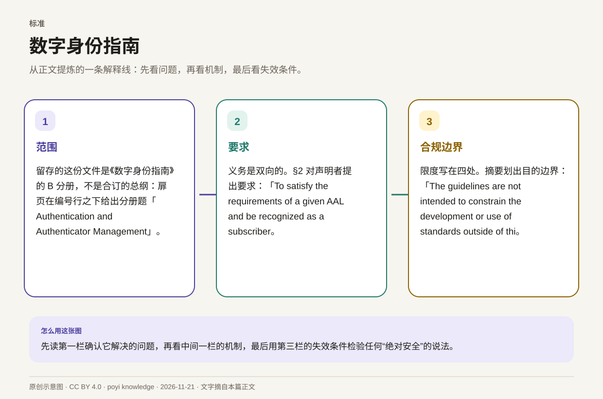
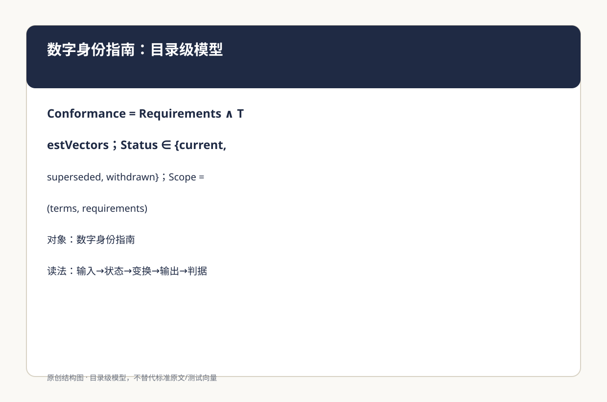

原理与机制
标准：数字身份指南（Digital Identity Guidelines）。留存的这份文件是《数字身份指南》的 B 分册，不是合订的总纲：扉页在编号行之下给出分册题「Authentication and Authenticator Management」，免费获取地址行写「This publication is available free of charge from」行后印着 DOI 10.6028/NIST.SP.800-63B-4，即本文件为 B 分册的第 4 版。摘要自述对象：「This guideline focuses on the authentication of subjects who interact with government information systems over networks to establish that a given claimant is a subscriber who has been previously authenticated.」并交代它定什么：「This document defines technical requirements for each of the three authentication assurance levels.」两处措辞与分册题一致：产出是按等级给出的技术要求，范围止于认证与 authenticator 管理。

为什么重要
§1 先把认证拆开定义：「Authentication is the process of determining the validity of one or more authenticators used to claim a digital identity by establishing that a subject attempting to access a digital service is in control of the secrets used to authenticate.」要补的缺口是对手能力的差别，分级正是为此：「Stronger authentication (i.e., a higher AAL) requires malicious actors to have better capabilities and to expend greater resources to successfully subvert the authentication process.」两段合起来说明风险不在算法而在控制关系：要判定的是声明者是否掌握相应秘密，等级则按对手须付出的能力与资源分档。
应用与实例
义务是双向的。§2 对声明者提出要求：「To satisfy the requirements of a given AAL and be recognized as a subscriber, a claimant SHALL authenticate to an RP (or IdP, as described in [SP800-63C]) with a process whose strength is equal to or greater than the requirements at that level.」§3.1.1.2 把口令的具体约束落到验证者与 CSP：「Verifiers and CSPs SHALL require passwords that are used as a single-factor authentication mechanism to be a minimum of 15 characters in length.」以及「When processing a request to establish or change a password, verifiers SHALL compare the prospective secret against a blocklist that contains known commonly used, expected, or compromised passwords.」三条引文同时约束两端：声明者所用过程的强度不得低于该等级，验证者与 CSP 则对口令长度与黑名单比对负有 shall 级义务。

边界与攻击面
限度写在四处。摘要划出目的边界：「The guidelines are not intended to constrain the development or use of standards outside of this purpose.」§1 划出场景边界：「It does not address the authentication of a person for physical access (e.g., to a building).」同节承认自愿泄露无从拦阻：「The protections at the various AALs are intended to protect against credential theft and are not intended to protect against willful disclosure of credential secrets by a subscriber.」§3.1.1 对最常见的凭证写得更直白：「Passwords are not phishing-resistant.」四条合起来是：目的之外的标准发展它不管，人员物理准入它不管，订阅者自愿共享或泄露没有技术手段可拦，而口令本身不抗钓鱼。
历史与背景
扉页写「NIST SP 800-63B-4 Digital Identity Guidelines Authentication and Authenticator Management」，即 B 册第四版；摘要末句直说：「This publication supersedes NIST Special Publication (SP) 800-63B.」出版史块给出被取代的那一版「Supersedes NIST SP 800-63B (June 2017; updated March 2, 2020)」与评审日期「Approved by the NIST Editorial Review Board on 2025-05-30.」；引用行给出七位作者与 2025 年：「Temoshok D, Fenton JL, Choong YY, Lefkovitz N, Regenscheid A, Galluzzo R, Richer JP (2025) Digital Identity Guidelines: Authentication and Authenticator Management.」扉页日期为 2025 年 7 月，DOI 行给 DOI 10.6028/NIST.SP.800-63B-4。目录行号所指的合订总纲与 A、C 两册不在这份文件里。四段引文合起来是这份文件的版本事实：分册号、被取代的上一版及其更新日期、评审批准日期、作者名单与年份。
逐步示例与核验
形式模型与复算步骤
[S=\min_i S_i,\quad S_i\in{\text{密钥强度},\text{分组安全},\text{实现安全}}]
数字身份指南的公开参数、密钥/随机数与消息；变量说明：S 为综合安全强度；各分量取最小值，不能只看密钥位数。1.读取标准规定的密钥/分组/模式参数。2.按标准表换算等效强度。3.取最弱分量作为系统强度。边界：公式只覆盖已登记的参数与假设；参数取值、标准版本和实现细节仍以来源为准。
参考出处
- Wikipedia search entry for 数字身份指南. https://zh.wikipedia.org/w/index.php?search=%E6%95%B0%E5%AD%97%E8%BA%AB%E4%BB%BD%E6%8C%87%E5%8D%97
- Handbook of Applied Cryptography (Menezes, van Oorschot, Vanstone). https://www.cacr.math.uwaterloo.ca/hac/